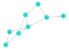

DAGs
using Flux, Zygote, LightGraphsImagine a data/knowledge base represented in a form of a directed acyclic graph (DAG), where a vertex would be modelled based on its parents (and their parents), but not on its descendants. We will make one assumption (common in graphical models) that two children are independent given their parent or, in other words, once we have access to the data or inferred values of the parent, we do not have to inspect its other children.
For example, in the graph below, when we infer some value for vertex e, we ignore vertices d, g, and h:

Firstly, we define a new type for our graph that would be able to store a structure of the graph together with vertex features:
struct DagGraph{G <: SimpleDiGraph,T}
g::G
vertex_features::T
endThen, we specify a model type:
Here, m is a function realizing one step of the message passing procedure, and od is output dimension.
In the course of calculating the value of vertex e, it may happen that for some vertices we will have to compute their value multiple times (for example for c, once when reached from e and once from f). Ideally, we would like to have a cache of already calculated values, which is difficult to do when autodifferentiating with Zygote as it does not support setindex operation. However, since the cache is assigned only once this can be realized through Zygote.buffer. We begin by initializing the cache:
initcache(g, k) = [Zygote.Buffer(zeros(Float32, k, 1)) for _ in 1:nv(g)]
Zygote.@nograd initcacheTo get the already computed value of a vertex when using the model, we just delegate the question to cache as
function (model::DagModel)(g::DagGraph, i)
cache = initcache(g.g, model.od)
ArrayNode(getfromcache!(cache, g, model, i))
end
(model::DagModel)(g::SimpleDiGraph, vertex_features, i) = model(DagGraph(g, vertex_features), i)which means that the getfromcache! will do all the heavy lifting. It turns out that this function just has to check if the value in cache has been already calculated. If not, it will calculate the value (applying model on millvertex!) and freeze the calculated item in cache:
function getfromcache!(cache, g::DagGraph, model::DagModel, i::Int)
cache[i].freeze && return(copy(cache[i]))
ds = millvertex!(cache, g, model, i)
cache[i][:] = model.m(ds).data
return(copy(cache[i]))
end
function getfromcache!(cache, g::DagGraph, model::DagModel, ii::Vector{Int})
reduce(catobs, [getfromcache!(cache, g, model, i) for i in ii])
endAnd what does millvertex! function do? It just takes the representation of ancestors (from cache) and put them together:
function millvertex!(cache, g::DagGraph, model::DagModel, i)
ProductNode((neighbours = millneighbors!(cache, g, model, i),
vertex = vertex_features[i])
)
endThe last missing piece is millneighbors! definition:
function millneighbors!(cache, g::DagGraph, model::DagModel, ii::Vector{Int})
isempty(ii) && return(BagNode(missing, [0:-1]))
xs = [getfromcache!(cache, g, model, i) for i in ii]
BagNode(ArrayNode(reduce(catobs, xs)), [1:length(xs)])
end
millneighbors!(cache, g::DagGraph, model::DagModel, i::Int) = millneighbors!(cache, g, model, inneighbors(g.g, i))
Zygote.@nograd LightGraphs.inneighborsNote that this recursive approach is not the most efficient way to implement this. It would be better to spent a little time with graphs to identify sets of vertices that can be processed in parallel and for which all ancestors are known. But this was a fun little exercise.